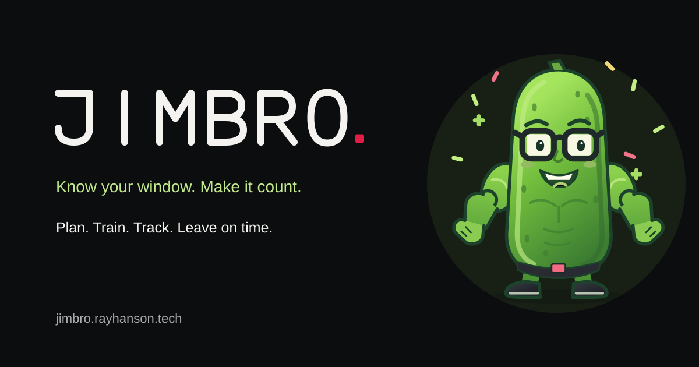
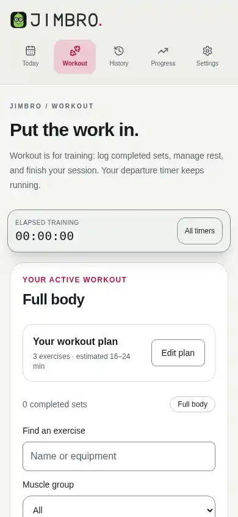
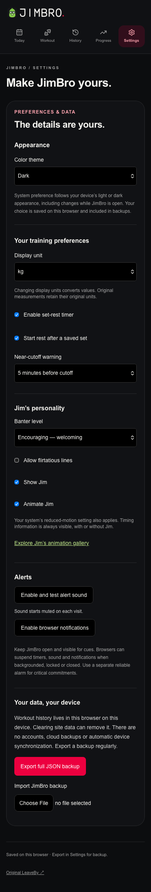
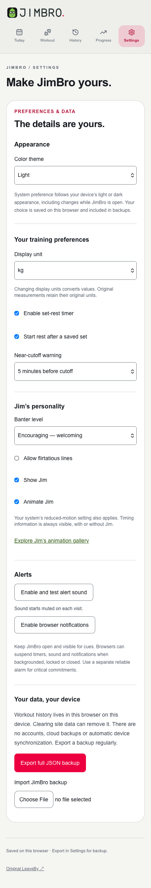

When should I stop?
Work backward from a commitment. Preparation, travel, and buffer estimates establish when to finish training and when to leave.
Explore the original planner ↗Time well lifted
A workout that fits your day
Plan the time you have, choose a routine, and record the work you actually do. JimBro brings LeaveBy’s scheduling and GymLog’s completed-set logging into one local-first gym companion, with history, progress, backups, and an animated cucumber named Jim.

My routine often runs from the gym to school, then work. The difficult part is making room for what happens between them.
The last set is not the end of the transition. There is still time to shower, change, pack, commute, and arrive. Logging the workout should help keep track of the effort without becoming another interruption.
Feedback on the earlier projects led to one shared experience: keep the timing plan close while recording completed sets, then carry that same session into history and progress.
JimBro brings the planner and logger together
around the same workout.
Work backward from a commitment. Preparation, travel, and buffer estimates establish when to finish training and when to leave.
Explore the original planner ↗Lift first, then record the set. Reuse useful previous values, adjust the result, and correct saved entries when needed.
Explore the original design ↗Today is the planning view. Enter your next commitment and transition time, review the available window, and choose or adapt a routine. A shorter option is available when a plan may exceed the time you have. You can also train without a deadline.
Workout is the training view. Starting a session opens it automatically. Log completed sets, edit the active exercise plan, manage rest, and finish the session. Moving between views keeps the same session and its departure deadlines running.
The deadline, elapsed workout time, and optional rest timer have separate jobs. Pausing rest does not pause the time you need to leave. Stopping, leaving, and arriving are recorded only when you confirm them.
Seven editable starters cover Full body, Push, Pull, Legs, 20-minute essentials, Dumbbell only, and Bodyweight. Preview, duplicate, adapt, or save your own routine.
Find exercises by name, equipment, or muscle group. Record completed sets, reuse comparable previous values, and correct entries. Weighted, bodyweight, assisted, timed, and distance work keep their own measurement types.
Departure guidance stays connected to the session while elapsed and rest timers remain independent. Rest can be paused, resumed, extended, or skipped without moving the departure deadline.
A calendar and session list lead to saved workout details. Edit records and notes, repeat a workout, or remove an entry with confirmation. Reloading can recover the active session.
Review training frequency and comparable exercise performance over time. Optional body-weight records stay separate from lifted load, and charts do not turn unrelated measurements into a strength claim.
Sessions, routines, body-weight records, and preferences are saved in this browser. Export a JSON backup and import it with a reviewed merge or replacement choice.
Jim gives the practical parts of the app a little character, without taking over the workout.
The original layered SVG character has twelve states for moments such as greeting, a saved set, rest, a time warning, preparation, departure, recovery, and completion. Small gestures, changing expressions, and contextual props connect the character to what is happening.
A bank of 248 authored local phrases supports four tones: Quiet, Encouraging, Playful, and Unhinged. Context and recent phrase history guide the selection. It runs locally, without an AI service.
Settings can hide Jim, stop decorative animation, or change his tone. System reduced-motion preferences also apply, and essential timing information remains visible independently of the character.
Explore the animation gallery ↗On narrow screens, navigation sits above the workout and a compact sticky timer stays in the layout. The exercise plan and logging controls stack below it.
This capture shows a Full body starter opened through the live app in its no-deadline training mode.

Light, Dark, or System
One saved preference across the app.


Release screenshots of the current appearance controls. System follows your device; an explicit choice stays saved through reloads and JSON backups. Open either image for the complete Settings view.
The Next.js and React interface shares a session model across planning, logging, history, and progress. Absolute timestamps drive scheduling, while IndexedDB handles local records, recovery, and changes between open tabs.
Reusable cards, dialogs, timer surfaces, and semantic theme colors keep the screens consistent. Jim uses an original SVG rig and CSS animation, with shared artwork for the wordmark, icons, and character.
The current web release runs without an account, a workout API, or a paid runtime service. Vercel hosts the application at its Cloudflare-managed custom domain.
The current appearance release was verified on October 26, 2026. Its recorded preview and production checks each passed 20 workout journeys and seven theme journeys, covering planning, logging, history corrections, recovery, backup import/export, and saved appearance.
The release record also documents Chromium, Firefox, and WebKit checks, calculation and storage tests, keyboard behavior, and automated accessibility scans. These are recorded release results; they do not replace physical-device, screen-reader, or human usability testing.
Read the release verification ↗Data stays in this browser on this device and origin. Clearing site data can remove it, so export a backup. Accounts, automatic cloud sync, and native apps are deferred. Keep the app open and visible for alerts; closed-app, lock-screen, background delivery, and offline launch are not guaranteed.
Plan your window, choose your workout,
and keep a record of the work you do.
No account required · Saved in this browser · Export backups in Settings